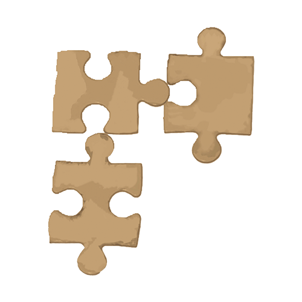
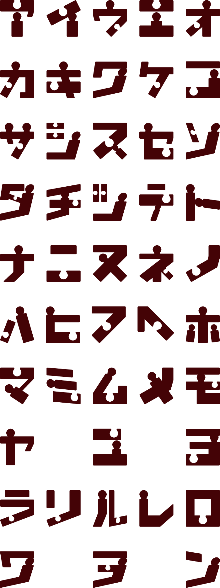

<< フォント一覧に戻る
（ジグソーパズル）
概要
昭和49年頃、「モナ・リザ展」が社会的流行となった影響で、ジグソーパズルが流行した。前年頃から輸入されていた「モナ・リザ」のジグソーパズルも売れ、ジグソーパズルの日本での普及の先駆者となった。
フォントについて
ジグソーパズルはパズルの凸部分と凹部分をモチーフにピースっぽく制作しました。文字の一部に凹凸を持たせることで、隣り合うピース同士が組み合わさっていくような佇まいを目指しています。
FONT LIST
収録文字一覧

TRY IT
パズルフォントで試してみる
ひらがなを入力すると、カタカナに変換してプレビューします。
※ 日本語入力の変換途中はそのまま入力できます。変換確定後、ひらがな・カタカナ以外は除外されます。
※ パズルフォントの濁点・半濁点付き文字は「パ」「ズ」のみ収録されています。
ここに入力
レトロナフォント
⬇
フォントをダウンロード
※ フォントデータは準備中です